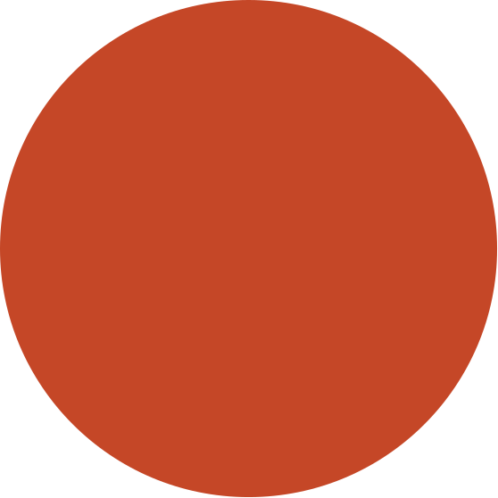
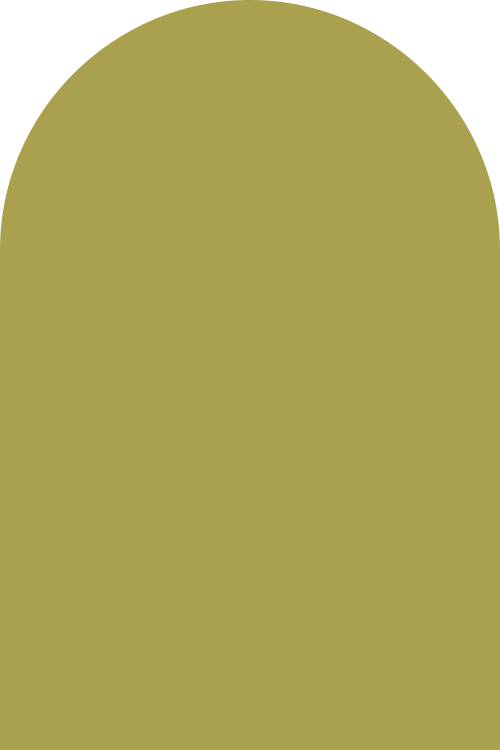
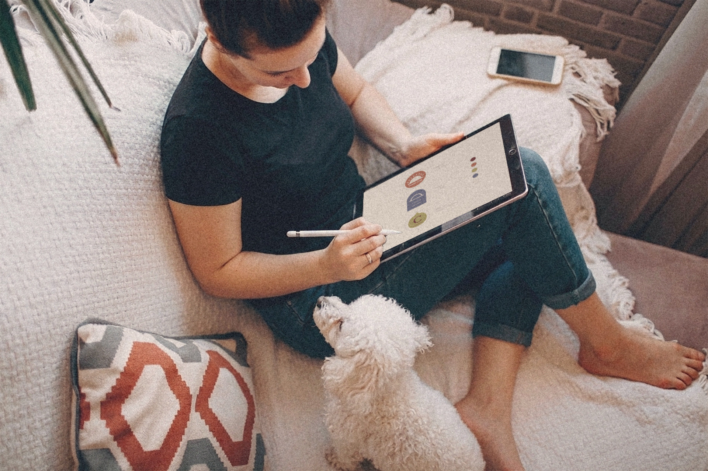
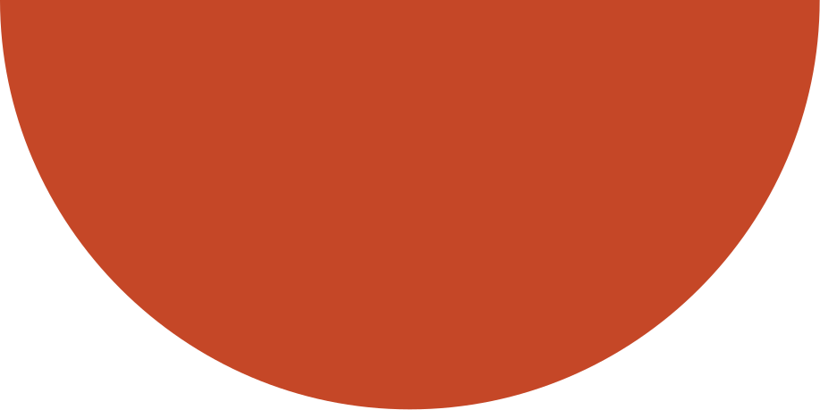
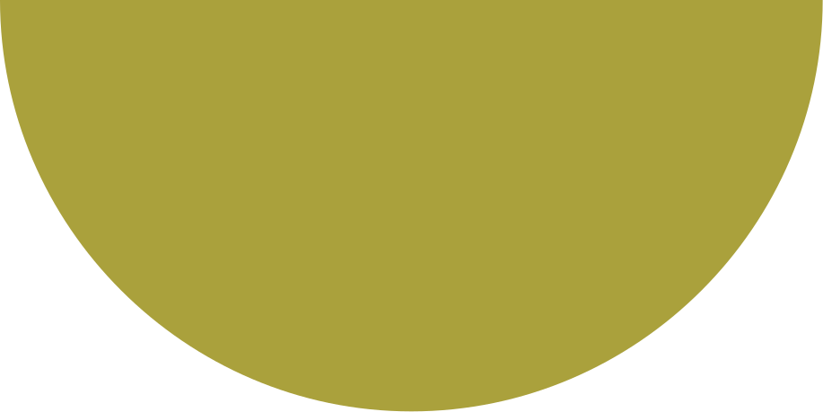

Chi sono
Ciao, sono Laura.
Sono una graphic designer di Aulla, in Lunigiana. Aiuto ristoranti, B&B, botteghe e imprese a costruire un’identità coerente e riconoscibile, e a usarla in autonomia.



Hai costruito qualcosa in cui credere.
Ci hai messo tempo, fatica e passione, e conosci il tuo lavoro meglio di chiunque altro. Ma quando devi raccontarlo, tra insegna, menù e social, qualcosa non torna: l'immagine non è all'altezza di quello che offri.
Ora costruiamo il brand che lo fa credere anche agli altri.
Io parto da lì: ascolto la tua attività, capisco cosa la rende diversa e la traduco in un'identità coerente, dal logo all'ultimo volantino. So cosa vuol dire avere le idee chiare su quello che fai e confuse su come raccontarlo: il mio lavoro è rimetterle in ordine.

Cosa faccio, e perché
Faccio in modo che chi ha un’attività o un’impresa, dal ristorante al B&B alla bottega, non si senta mai perso quando deve raccontarsi: trasformo le sue idee in un’identità chiara, riconoscibile e fatta per durare, e gli lascio gli strumenti per usarla in autonomia.

In cosa credo
-
Un logo non basta
Un'identità funziona quando è coerente ovunque: sull'insegna, sul menù, sul profilo Instagram, sul biglietto da visita.
-
Un'identità tua nasce dall'ascolto
Prima di disegnare ascolto la tua storia: è l'unico modo per creare qualcosa che ti somigli e non sia la copia di nessun altro. Ed è la parte che l'IA non sa fare.
-
La chiarezza viene prima di tutto
Tempi, costi e passaggi sempre dichiarati.
Esperienza
Amo la carta, la stampa e le cose fatte a mano. Quando un progetto lo chiede, le porto con me: un lettering, una carta speciale, una stampa curata.
-
Oggi
Graphic designer freelance
Brand identity e restyling per attività e imprese, in Lunigiana e da remoto.
-
2024-2025
Premio Lunezia
Logo celebrativo per i trent'anni del premio e materiali per gli eventi.
-
2024-2025
Nuts Italia
Immagine coordinata adattata ai punti vendita della catena: social, campagne e grafiche in negozio.
-
2023-2026
Istituto Pantheon Design & Technology, Roma
Laurea triennale in Graphic Design, 110 e lode.
-
2021-2023
PED Srl
Loghi, identità e stampati per attività commerciali, dal primo incontro alla stampa.

Raccontami il tuo progetto
Il punto di partenza è una chiamata conoscitiva: mi racconti dove sei adesso e dove vorresti arrivare.
Prenota una chiamata